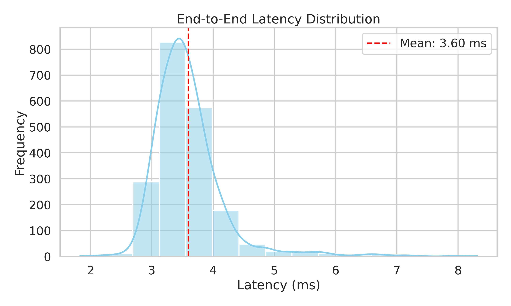
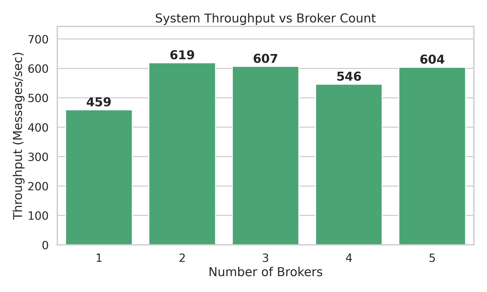
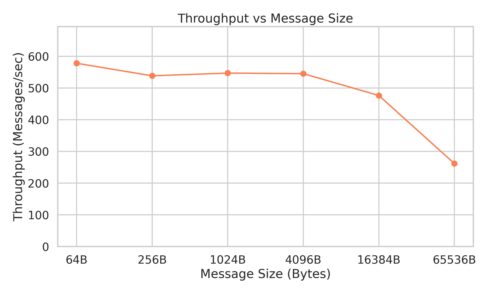
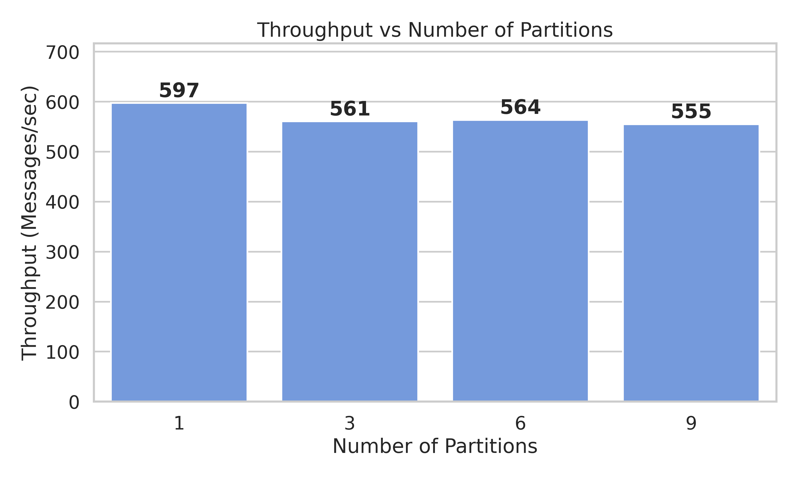

End-to-End Latency Distribution
Mean round-trip produce-to-consume latency of 3.60 ms across 2,000 samples with a tight unimodal distribution.
A fault-tolerant, Kafka-inspired distributed publish-subscribe messaging engine built from scratch in Python — featuring partitioned topics, segmented append-only logs, consumer groups, fan-out subscriptions, and automatic replica promotion.
Produce keyed or keyless messages to topic orders (3 partitions), kill brokers to watch automatic replica promotion, add or evict consumers to trigger rebalancing, and poll/commit offsets in real time.
Every node-to-node and client-to-node TCP message uses a 4-byte big-endian unsigned integer header (>I) followed by UTF-8 JSON. Edit the payload below to inspect the exact bytes StreamLog sends over the wire.
Measured on a local multi-broker StreamLog cluster via benchmark/benchmark.py and plotted with benchmark/plot_benchmarks.py. Click any chart to zoom.

Mean round-trip produce-to-consume latency of 3.60 ms across 2,000 samples with a tight unimodal distribution.

Throughput climbs from 459 msg/s (1 broker) to 619 msg/s (2 brokers) and sustains ~600+ msg/s across up to 5 brokers.

Message rate transitions smoothly from ~578 msg/s at 64 B to ~262 msg/s at 64 KB while raw byte throughput increases dramatically.

Sustains 555–597 msg/s across 1, 3, 6, and 9 partitions with balanced round-robin sharding.
Every test class boots real Coordinator and Broker OS processes on isolated high ports (19000–19004) over real TCP sockets — zero mocks. Automated in GitHub Actions across Python 3.10, 3.11, and 3.12.
Zero external runtime dependencies — clone, install editable, start a 3-broker cluster, and stream messages in seconds.